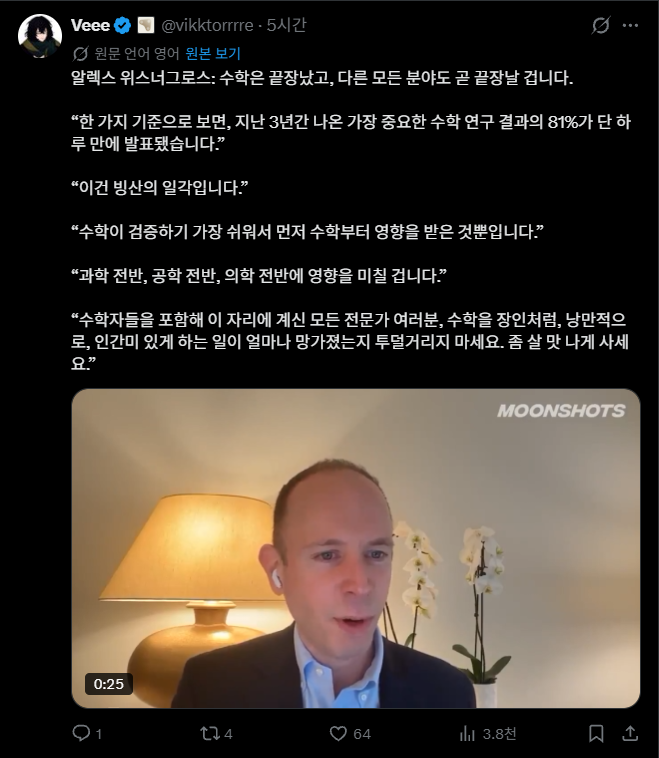

수학이 검증하기 쉬워서 먼저 매를 맞은 것일 뿐
과학 의학 공학 모두 곧 끝날거라고 예측함.
전문가들은 할 일 없다고 투덜거리지 말고 살 맛 나게 살라고 조언

수학이 검증하기 쉬워서 먼저 매를 맞은 것일 뿐
과학 의학 공학 모두 곧 끝날거라고 예측함.
전문가들은 할 일 없다고 투덜거리지 말고 살 맛 나게 살라고 조언
리만가설도 그렇지만 문제가 인간이 이해할 수 없는 영역에서 풀릴경우임.
이 경우는 그냥 수학이나 학문은 취미의 영역이 되버릴듯
뇌에 ai 박는거지
생물학은 아직 멀었다 ㅋㅋㅋ
생물학 단백질 연구 보셈
생물학은 아직 멀었다는 이야기는 생물학에 ai써서 연구하려면 멀었다가 아니라
본문의 수학처럼 수학자들 이제 뭐하지? 이젠 끝났다 정도가 되려면 멀었다는거임
왜냐면 생물학은 결국 생물한테 실험을 해봐야하는데 시뮬레이션으로는 한계가 있기 때문임
이렇게 만들면 단백질이 이렇게 접히니까 이렇게하면 새로운 바이러스 만들 수 있음 이라고 ai가 알려줘봐야 결국 그걸 진짜로 만들어서 생물한테 넣어봐야되니까
언젠가는 생물에 넣어보지 않아도 그것까지 다 예측하는게 나오겠지만 아직은 거기까지 예측하기엔 생물이 너무 복잡함
실험적인 연구도 인력이 대폭 축소될 예정임
인간연구진의 60년간 18만개의 단백질을 규명했는데
Ai가 1년만에 2억개 규명함
물론 실험으로 증명을 해야하기에 필수 인력들이 있고 대부분 자동화가 진행됨
결국 인력이 많이 줄어들 예정
6개월전만해도 수학자들도 똑같이 말했음 ㅋㅋㅋ
구글 딥마인드의 하사비스가 AI로 단백질 구조 예측하는 프로그램 만든 공로로 2024년에 노벨상 받았어
뭔소리래 얘는
멀었다 ㅋㅋㅋ (눈앞에 있어서 못봄)
아 눈이 멀었다고 ㅋㅋㅋㅋㅋ
기록 가능한 데이터가 있는 모든 분야는 그냥 다 대체된다고 보면 됨.
AI가 닷컴에 비해 기간 비용이 엄청나게 드는 게 오히려 다행이라고 생각함
저런 사짜들이 입을 털어도 견적서를 보고 못해도 한번은 의심하게 만드니까
의학 시급합니다
탈모는 어떻게 안된대?
어떻게 이런말 하는애들은 죄다 머머리냐
이새끼 뭐야
대랑 머리랑 싸우는 중이냐 대머리새꺄?
철학하라고 철학
모든 사람들 모든분야가 자기가 쌓아올린걸 속절없다고 느낄때가 올듯 다들 마음의 준비를하도록
이제 진짜 시대가 확확 바뀌는게 느껴지네
막줄이 제일 중요
다같이 실직한다는건 노동해방이다
자 두가자 특이점
그건 지금도 할수있음 백수라고

쉘든 같이 생겻넹
본인 엔지니어인데, 아직 ai로 대체 안되는 부분이 있어서 ㅈㄴ 빡셈. 가뜩이나 사람도 없어서 빌빌대고 있음..
돌고돌아 다시 예술이뜬다..!
물리학처럼 실험, 검증에 필요한 에너지량이 어마어마한 분야거나 생물학처럼 생장주기 긴 애들 아니면 뭐
유전병 암 치매 정복좀 해달라고
쓸데없는 짓하지말고 탈모치료제 내놔
바둑이랑 수학은 좀 다른 케이스가 아닐까..
바둑은 AI가 압도적으로 뛰어나더라도 인간들끼리 대국하는게 스포츠로서 의미가 있는데
수학자들이 막혀있는 한계점을 연구하고 뚫어내는 것을 목표로 했을 때
AI경쟁과 별개로 사람끼리만 뚫읍시다 하는게 의미가 있나 싶은데..
뚫고 나서 인간이 이해할 수 있게 정리까지 해버리면 수학자는 뭘 해야하지
학문의 재미를 향유해야하나?
아니면 AI가 선행으로 뚫어놓는것들을 해석해서 인간의 언어로 소화하는 직업이 되는건가
AI가 뚫은걸 기반으로 또 새로운걸 뚫고 뚫다보면
어느순간에는 인간이 이해하지 못하는 것들을 전제로 계속 한계돌파를 할지도 모르겠는데
그 땐 어떻게 되는거지